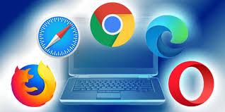

A web browser is software used to access, retrieve, and display web pages on the internet.Modern web browsers also include developer tools that allow users to inspect and debug web pages, making them essential for web development.
When a user enters a website address (URL), the browser first communicates with the Domain Name System (DNS) to find the correct IP address of the web server hosting the site. It then sends an HTTP or HTTPS request to that server asking for the web page files. The server responds by sending back the necessary resources such as HTML for structure, CSS for styling, JavaScript for functionality, and images or other media. The browser processes and combines all these elements, rendering them into a readable and interactive web page that the user can view and navigate.
A web browser is important because it acts as the main tool that allows users to access and interact with information on the World Wide Web. It translates web data into a readable and visual format by displaying text, images, videos, and interactive content from websites. Without a web browser, users would not be able to easily open websites or navigate the internet using simple addresses like URLs. It also supports communication with web servers, enables secure data exchange through protocols like HTTPS, and provides features such as tabs, bookmarks, and history to improve user experience. Overall, a web browser is essential because it is the gateway that connects users to online resources and services.
This concept plays a crucial role in how the internet functions, ensuring efficient communication and accessibility of web resources.